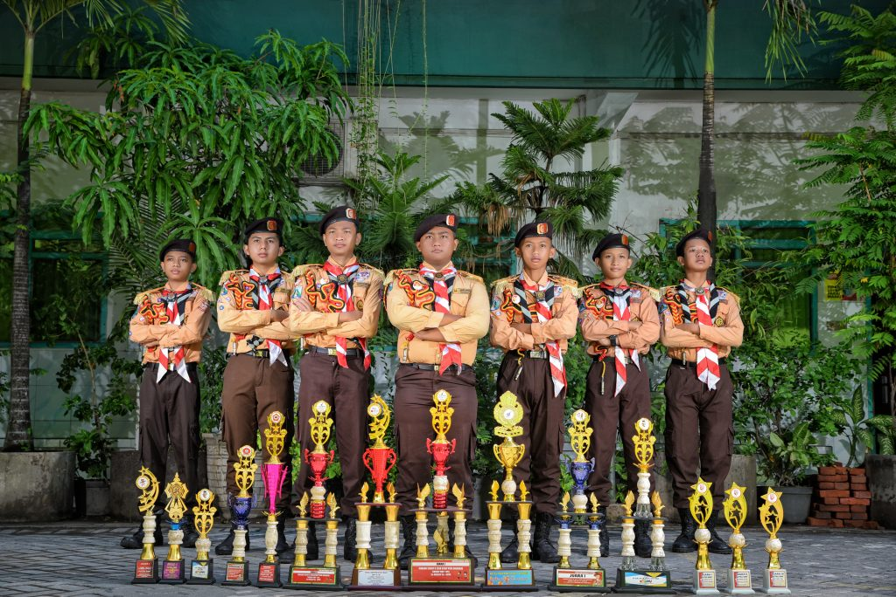

Motto
"Tampil Beda dan Paling Bisa"
Visi
Mewujudkan Sekolah yang unggul dalam berimtaq, berakhlakul karimah, beriptek, berprestasi, berbudaya, berwawasan lingkungan, tanpa diskriminasi, dan berkompeten serta berwawasan global.
Misi
1. Menanamkan keimanan dan ketaqwaan terhadap Tuhan Yang Maha Esa dalam pembelajaran semua mata pelajaran.
2. Melaksanakan nilai-nilai agama dan berperilaku akhlakul karimah dalam kehidupan sehari-hari yang juga tertuang dalam pembelajaran di bidang akademis dan nonakademis.
3. Menyelenggarakan kegiatan amaliah melalui zakat, infak, dan shodaqoh
4. Melaksanakan sistem manajemen dan layanan berbasis mutu
5. Melaksanakan pembelajaran aktif, inovatif, kreatif, efektif, menyenangkan dan berkarakter sehingga peserta didik dapat berkembang secara optimal sesuai dengan potensi yang dimiliki.
6. Menyelenggarakan kegiatan pembelajaran online.
7. Menyelenggarakan kegiatan budaya membaca dan menulis dalam upaya meningkatkan prestasi.
8. Menumbuhkan semangat berprestasi kepada seluruh warga sekolah.
9. Melaksanakan penilaian otentik.
10. Meningkatkan fasilitas-fasilitas sekolah sebagai sumber dan sarana belajar dalam mendukung upaya peningkatan prestasi.
11. Menumbuhkembangkan bakat dan minat peserta didik.
12. Membudayakan 5S (Senyum, Salam, Sapa, Sopan, dan Santun).
13. Mewujudkan lingkungan sekolah yang bersih, rapi, dan indah.
14. Menumbuhkan rasa nasionalisme.
15. Meningkatkan kesadaran dan kepedulian warga sekolah terhadap kelestarian lingkungan hidup.
16. Menyelenggarakan layanan Pendidikan inklusif.
17. Mewujudkan lulusan yang mampu bersaing di jenjjang Pendidikan lebih tinggi
Keunggulan OSIS SMP PGRI 1 Buduran
Tim Pramuka dengan Segudang Prestasi

Penghargaan Siswa Berprestasi
1.Punya agenda rutin 3 bulan sekali (triwulanan) tampil pada acara Campursari TVRI Jawa Timur.
2.Wajib aktif dalam Gerakan Pramuka untuk semua warga sekolah (tenaga pendidik, tenaga kependidikan, dan peserta didik).
3.Pembekalan life skills entrepreneur (kewirausahaan): Tata Boga, Karya Seni, dan Campursari.
4.Keterlibatan alumni dalam kegiatan: pembinaan regu Pramuka Inti dan Grup Campursari. Kreatif menghasilkan karya-karya baru: tari kreasi, lagu campursari, aransemen musik, dan naskah skenario drama berbahasa Jawa (ketoprak).